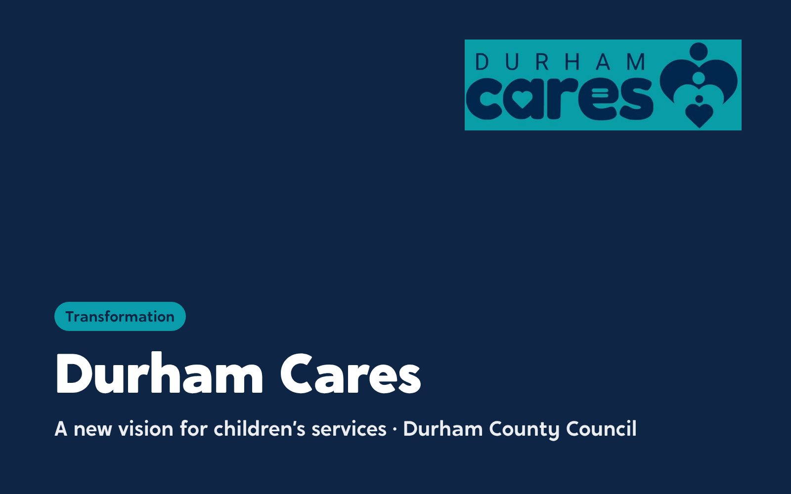
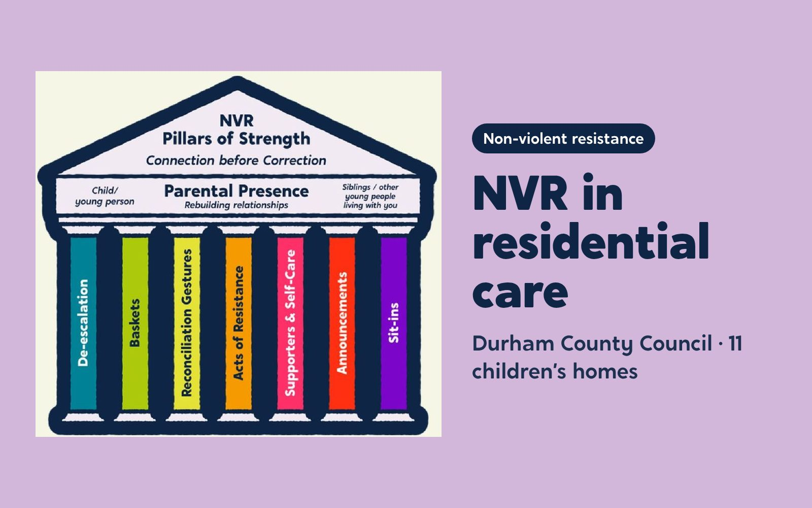
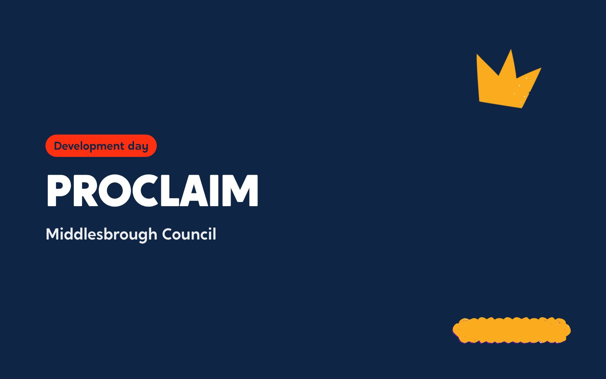
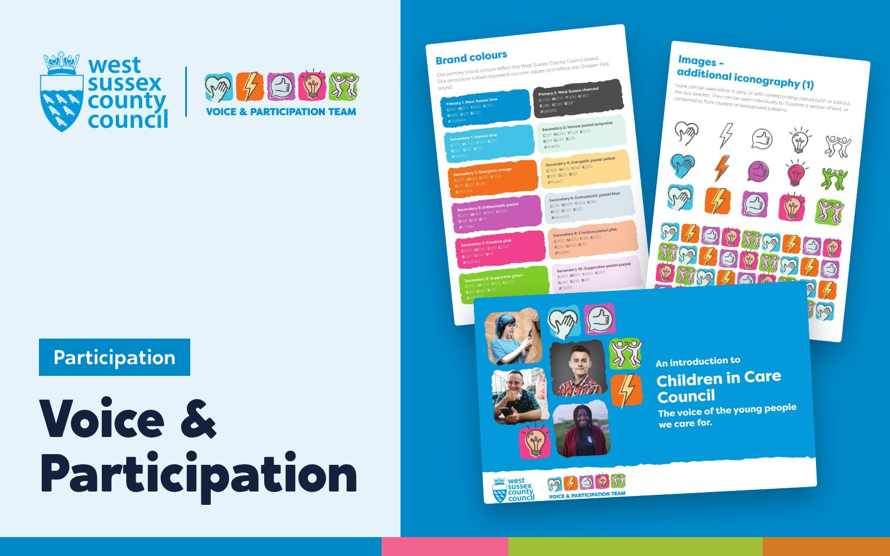
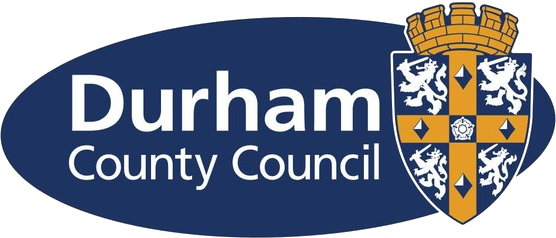
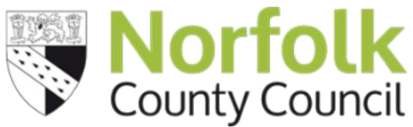
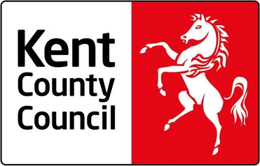

Our work with 36 councils, in every region of England
Work with 36 local authorities, the NHS and the Department for Education. Every one was co-designed with the children, families and staff who live with the result.


Featured work
Our biggest projects, told in full. Pick a type of work to narrow the list.

Durham County Council: Durham Cares
A new vision for children’s services, built from the ground up. 105 residential staff shaped it.
Read the case study
Middlesbrough Council: Middlesbrough Children Matter
A vision built with young people and staff. 300 staff, young people and partners helped shape it.
Read the case study
Home and Future: Youth Participation Collective
A regional network of participation workers and young people, named and branded by the young people in it, with a Shadow Board designed for the region.
Read the case study
Suffolk County Council: The Family Business
From corporate parenting to community parenting. Over 60 people at the employer launch, and up to 40 young people qualified through the Skills Academy.
Read the case study
Durham County Council: NVR in residential care
Non-violent resistance in 11 children’s homes. 120 residential staff trained.
Read the case study
Darlington Virtual School: Designated Leaders
The training designated teachers designed for themselves. 22 designated teachers trained on a 10-month programme they helped design.
Read the case study
The Care Leaders Summit 2026
A national day with care-experienced leaders at the front. 120 places, and 10 Fellows of The Care Leaders Fellowship on the guest list.
Read the case study
NAVSH: a co-design workshop with Virtual School Heads
Co-design, learned by doing it. Around 200 Virtual School Heads in the room.
Read the case study
NHS Staffordshire and Stoke-on-Trent: Bridge and Beyond
One service for the children who fell between systems. A business case that secured £4 million, and more than 400 staff trained.
Read the case study
PwC: New World, New Skills
Opening the doors of a global firm to care leavers. 30 care leavers from four councils spent the day at PwC’s London office.
Read the case study
Durham County Council: Families First Partnership
Hearing from everyone before changing everything. Over 475 people heard across 50 teams.
Read the case study
Middlesbrough Council: PROCLAIM
Making a town-wide trauma-informed schools programme heard. 427 staff signed up to the training platform and 128 CPD certificates were issued.
Read the case study
Buckinghamshire Council: Youth Voice Bucks
A participation service young people named, branded and shaped. 19 champions from 11 service areas.
Read the case study
West Sussex County Council: Voice & Participation
A participation strategy, a new brand and a local offer for care leavers. Eight areas of support, co-produced and online.
Read the case study
The National House Project: Care Leavers National Movement
A national movement led by young people leaving care. 12 care-experienced young people from six councils, trained in leadership.
Read the case studyMore of our work
Earlier and smaller projects. Open one to see what we did.

Durham County CouncilWe trained a peer researcher and made a documentary and seven short films on how Durham cares.2025 to 2026
Durham County Council: How Durham Cares
For Durham’s Families First reforms, we trained a peer researcher to interview staff, young people and families about how Durham shows it cares. The result was a 30-minute documentary and seven short films, launched to staff in March 2026.

Norfolk County CouncilWe are building a scheme where care-experienced adults are trained and coached to mentor children in care.2026 to 2027
Norfolk Virtual School: mentors who have been there
Children in care asked for mentors who understand their journeys. We are building a peer mentoring scheme with Norfolk Virtual School, where care-experienced adults are trained, coached and supported to mentor children in care.
Liverpool City CouncilWe produced Rising Futures, a conference where young people designed and ran their own workshop.2025
Liverpool Virtual School: Rising Futures
Delegates at Liverpool’s 2024 conference asked to hear from young people directly, not just about them. For 2025 the Virtual School asked us to help produce Rising Futures, and young people designed and ran part of the day themselves.

Kent County CouncilWe trained around 490 school and social care staff through six sessions that followed one child’s journey through care.2022 to 2023
Virtual School Kent: A Tool for Change
Every session followed Sam, a child whose story ran from before birth into care. By the end, around 490 staff across Kent’s schools and services could see Sam in the children in front of them.
Oxfordshire YouthWe helped a youth work charity design, pitch for and win a five-year supported accommodation contract.2020 to 2021
Oxfordshire Youth: Young People’s Supported Accommodation
Oxfordshire Youth wanted to bring a youth work approach to supported accommodation for young people aged 18 to 24. We helped the charity shape its proposal and its pitch, then plan how to move 130 young people into the new service.
“Absolutely enabled us to win the 5 year contract reaching 130 young people every year.”
Rotherham Metropolitan Borough CouncilWe looked at 11 children’s services through young people’s eyes, and a new participation model followed.2017
Rotherham MBC: services through young people’s eyes
In 2017 we asked young people, care leavers and the professionals around them how Rotherham’s children’s services looked from where they stood. The scope covered 11 service areas, and within months the council had moved and strengthened its participation service.
Stockport CouncilWe trained foster carers and social workers to write and read the referrals and profiles that arrive before a child does.2016
Stockport Council: Referral and profile training
In 2016 we designed and ran training for Stockport’s fostering service on the referrals and profiles that arrive before a child does: how they are written, how they are read, and what they mean for the child.
City of York CouncilWe brought young people in care into the co-design of Making York Home.2015 to 2016
City of York Council: Making York Home
York wanted every child in its care to be fostered in York. As part of Innovation Unit’s team, we brought young people in care into the design of Making York Home, through the co-design workshops and design sprints.